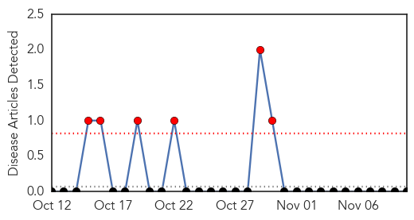
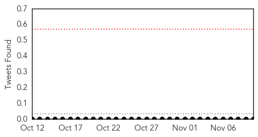
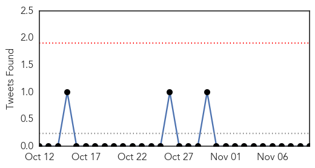

Yellow Fever
30-Day Web Trend
6 alerts, 0 warnings

30-Day Twitter Trend
3 alerts, 0 warnings

Article Locations

Article Confidences

Top Articles:
-
No articles found for Nov 10, 2014
Top Tweets:
- 0.606
- Flavivirus news: Health board imposes yellow fever restrictions - The Daily Advertiser: Health ... http://t.co/o8xR3MrQdb pathogenposse
- 0.606
- Flavivirus news: Health board imposes yellow fever restrictions - The Daily Advertiser: Health ... http://t.co/nIPRXfz3Wy pathogenposse
- 0.606
- Flavivirus news: Health board imposes yellow fever restrictions - The Daily Advertiser: Health ... http://t.co/mC1DGYOoRE pathogenposse
Influenza
30-Day Web Trend
0 alerts, 0 warnings
30-Day Twitter Trend
0 alerts, 0 warnings

Article Locations

Article Confidences
Top Articles:
- 1.000
- How Ebola Compares With Other Diseases
- 0.997
- When the flu wiped out millions
- 0.996
- State health officials say flu season is officially here
- 0.995
- Gear up for flu shots, Summit County health officials ask residents
- 0.963
- Flu season arrives in Erie, Crawford counties
- 0.948
- Doctor stresses importance of flu shots
- 0.934
- The Hidden Dangers of Over-Vaccination
- 0.765
- Stop Flu at School vaccination clinics begin
Top Tweets:
-
No tweets found for Nov 10, 2014